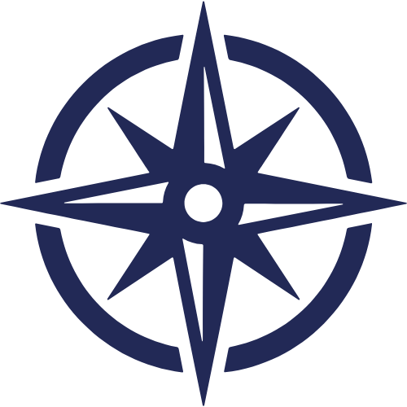
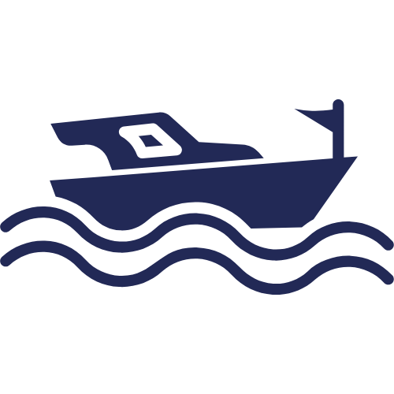

PLAIZANCE
Profitez, on s’occupe du reste.
Conciergerie nautique connectée.
Surveillance, gestion et préparation de votre bateau, en continu.
Vous devez vous déplacer régulièrement
Vous êtes parfois loin
Vous vous inquiétez à distance
Les problèmes arrivent sans prévenir
Votre bateau n’est pas toujours prêt au moment voulu
Zéro contrainte.
Votre bateau est surveillé, entretenu et prêt à naviguer.
Votre bateau est :
Vous n’avez plus besoin d’y penser.
PLAIZANCE s’en occupe.
Suivez l’état de votre bateau grâce à un boîtier qui veille sur votre bateau
Nos équipes effectuent des passages planifiés pour vérifier l’état général de votre bateau.
Possibilité de préparation avant votre venue, entretien, ménage : ainsi vous profitez davantage
En cas d’anomalie détectée, une intervention sera déclenchée par un professionnel local
De la Manche à la Méditerranée, Plaizance s’appuie sur des professionnels du nautisme pour les visites à bord et les interventions au port. Sélectionnez un repère pour découvrir le partenaire local.

La veille permanente
de votre bateau
Pendant 12 mois
*contrôle des amarres, des pare-battages, de présence d’eau à l’extérieur et d’effraction + rapport photo

Zéro surprise : votre bateau
toujours prêt
Pendant 12 mois
*contrôle des amarres, des pare-battages, de présence d’eau à l’extérieur et d’effraction + rapport photo
**mise en marche de l’électronique
***25€/mètre linéaire supplémentaire et selon type de coque (facturé mensuellement)

Un bateau habitable
prêt à naviguer
Pendant 12 mois
*contrôle des amarres, des pare-battages, de présence d’eau à l’extérieur et d’effraction + rapport photo
**mise en marche de l’électronique
***50€/mètre linéaire supplémentaire et selon type de coque (facturé mensuellement)

Une prise en charge complète
et haut de gamme
*contrôle des amarres, des pare-battages, de présence d’eau à l’extérieur et d’effraction + rapport photo
**mise en marche de l’électronique
Avec PLAIZANCE, vous gagnez :
👉 Zéro contrainte. 100% plaisir.
PLAIZANCE associe :
👉 Vous êtes informé en temps réel.
👉 Et nous agissons

Parlons de votre bateau, de votre usage
et du niveau de service le plus adapté.
Prenez contact avec nos conseillers pour plus d’informations sur nos services.
+33 9 72 45 14 29Prenez rendez-vous pour être conseillé sur nos services par nos équipes quand vous le souhaitez.
Choisir un créneauRemplissez le formulaire afin d’être rappelé. Nous nous engageons à vous répondre dans les meilleurs délais.
Plaizance est née d’une conviction simple : profiter de son bateau devrait toujours rester un plaisir, jamais une contrainte.
Derrière cette promesse, on retrouve l’expertise de Nauticoncept, acteur reconnu depuis plus de 10 ans dans les solutions connectées pour le nautisme. Spécialistes de la supervision intelligente des bateaux, nous avons imaginé Plaizance comme une extension naturelle de notre savoir-faire : une offre de conciergerie connectée, alliant technologie, accompagnement humain et exigence opérationnelle.
Notre mission est claire : vous libérer de la gestion pour vous permettre de vous concentrer uniquement sur l’essentiel — naviguer et profiter.